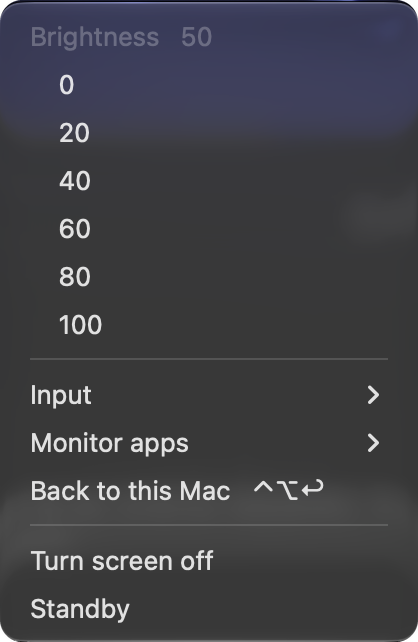

Brightness, volume, inputs and apps for LG webOS smart monitors on Mac. Works where DDC/CI fails.
Free and open source. Native, signed and notarized. macOS 13 or later.

A native menu bar app that keeps one connection open, so every key press lands in about a tenth of a second.
⌥ + volume keys or ⌃⌥↑↓. Real backlight, not an overlay, with a Liquid Glass indicator built like the system one.
macOS can't change the volume over HDMI. When audio goes to the monitor, the volume and mute keys drive its speakers.
HDMI, DisplayPort, USB-C from the menu bar. ⌃⌥↩ brings you back to the Mac even when it's off screen.
YouTube, Netflix, Prime Video and the other webOS apps, one click from the menu bar.
Turn the panel off and keep the music playing. Any brightness key wakes it up.
lgmon://brightness/40, lgmon://input/HDMI_2: links for Shortcuts, Raycast and Stream Deck. Plus a command line tool.
MonitorControl, Lunar, BetterDisplay and m1ddc speak DDC/CI through the video cable. LG's webOS monitors don't answer it, and some Mac HDMI ports don't carry it anyway. lgmon uses the network API that LG's own app uses instead.
# the usual way
$ m1ddc set luminance 40
DDC communication failure: (iokit/?)
unknown subsystem error
# lgmon
$ lgmon brightness 40
brightness 40
$ lgmon input
* HDMI_1 Mac connected
USB-C_1 PC
Any LG monitor running webOS should work. Tried one? Tell us how it went and it joins the tested list.
| Tested | UltraGear 32G810SA (webOS 24) on a MacBook Pro M3 Pro over HDMI |
| Expected | MyView 25SR50F, 27SR50F, 32SR50F, 32SR53FS, 27SR73U, 32SR70U, 32SR83U, 32SR85U · Smart Monitor 32SQ730S, 32SQ780S, 43SQ700S, 32U889SA, 37U730SA, 27U511SA · 34SR65QC, 34GX90SA, 39GX90SA, 45GX90SA |
| Bonus | LG webOS TVs speak the same API |